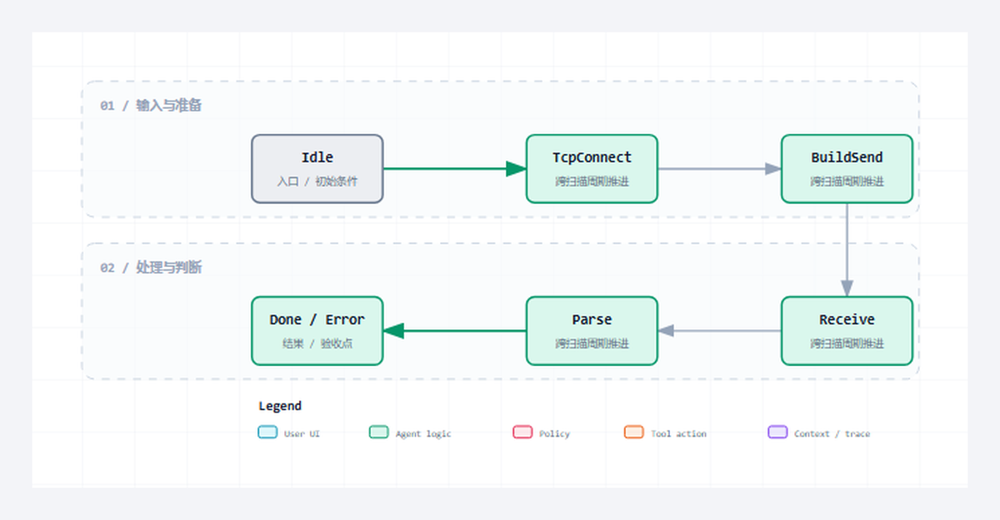

Client 源码展示一次主动请求怎样跨越连接、构造、发送、接收、解析和恢复阶段。
适合谁收藏
- 准备复用本组源码并审查对象边界的工程师。
- 需要把公开代码装配进目标 CodeSys 工程的人。
- 准备重新完成编译、离线测试和真机验证的读者。
本篇完整公开 3 个 ST 文件。代码直接读取已验证工程，保留声明、实现、注释和缩进；没有伪代码，没有跨文件拼接，也没有省略号。
先给结论
Client 源码展示一次主动请求怎样跨越连接、构造、发送、接收、解析和恢复阶段。 本篇的通过标准不是“代码已经贴出”，而是每个文件的职责、调用位置、状态边界和验证入口都能对应起来，并且完整代码可逐字回查源文件。

读图重点
先找到 E_HttpClientState 在本组中的位置，再沿图确认其余对象分别承担数据、状态、执行或诊断职责。图只给阅读顺序，最终判断必须回到下面的完整 ST 代码。
先看文件职责
| 序号 | 文件 | 职责 | 行数 |
|---|---|---|---|
| 1 | E_HttpClientState.st | Client 事务状态 | 15 |
| 2 | FB_HttpClient.st | 主动请求状态机 | 834 |
| 3 | ST_HttpClientMetrics.st | Client 运行指标 | 11 |
阅读顺序不是按文件名机械展开。先看数据和状态，再看公开方法，最后顺着错误出口和调用对象检查边界。源码篇的目标是让读者能对照工程复现，不是用大段代码制造篇幅。
从协议约束到代码职责
协议约束
Client 源码展示一次主动请求怎样跨越连接、构造、发送、接收、解析和恢复阶段。 协议层只定义消息与状态成立的条件，工程层还必须把条件分配给确定对象，避免 Parser、Builder、Server、Client 和测试入口互相越权。
对象分工
- 第 1 个对象
E_HttpClientState.st：承担“Client 事务状态”。阅读时先确认输入与公开输出，再追状态、长度和错误出口，最后核对它被谁周期调用或被哪个对象消费。 - 第 2 个对象
FB_HttpClient.st：承担“主动请求状态机”。阅读时先确认输入与公开输出，再追状态、长度和错误出口，最后核对它被谁周期调用或被哪个对象消费。 - 第 3 个对象
ST_HttpClientMetrics.st：承担“Client 运行指标”。阅读时先确认输入与公开输出，再追状态、长度和错误出口，最后核对它被谁周期调用或被哪个对象消费。
装配与验证
这组文件必须作为一个职责单元阅读和编译。先用确定输入验证“Execute 只触发事务，FB 仍需周期调用”，再制造非法或容量边界验证“完成条件是响应解析结束”，最后在真实通信或上层调用中确认“连接错误和协议错误分开输出”。如果单文件测试通过但装配后失败，应优先检查结构体、常量、状态枚举和周期调用关系，而不是立即重写核心算法。源码完整公开只证明读者拿到了同一事实源，目标运行时是否通过仍需重新编译和真机取证。
本篇从 E_HttpClientState.st 开始审查：先确认“Execute 只触发事务，FB 仍需周期调用”对应的类型、常量或公开输入，再沿 CASE 或方法调用追踪成功路径，随后逐个检查容量、超时和协议错误出口，最后在 ST_HttpClientMetrics.st 对应的结果或装配位置确认错误能被观测、清理并再次执行。这个顺序专门用来区分“算法正确但没有周期调用”“状态能完成但错误被覆盖”和“连接错误和协议错误分开输出尚未形成验证证据”三类问题。只有本篇源码、装配和验证使用同一组对象与同一组边界，完整开源才具有可复现意义。
本篇完整开源代码
下面按职责顺序给出本篇全部 ST 文件。每个代码块保留完整声明与实现；阅读时把状态、长度、错误出口和调用对象与上面的职责表逐项对照。
完整源码 1：E_HttpClientState.st
职责：Client 事务状态
/// 功能 : HTTP Client 状态枚举。
/// 库依赖 : 暂无
{attribute 'qualified_only'}
{attribute 'strict'}
TYPE E_HttpClientState :
(
iDisabled := 0,
iIdle := 1,
iTcpConnect := 2,
iSend := 3,
iReceive := 4,
iDone := 5,
iFault := 6
) INT;
END_TYPE完整源码 2：FB_HttpClient.st
职责：主动请求状态机
/// 功能 : 基于 NBS 的 HTTP Client。
/// 库依赖 : CAA Net Base Services
{attribute 'hide_all_locals'}
FUNCTION_BLOCK FB_HttpClient
VAR_INPUT
xEnable : BOOL := FALSE; // CODESYS 风格使能输入。
xExecute : BOOL := FALSE; // CODESYS 风格发送命令上升沿。
xReset : BOOL := FALSE; // 复位命令，TRUE 时清空状态和诊断。
xAbort : BOOL := FALSE; // 中止命令，TRUE 时关闭当前连接并复位事务。
xCloseConnection : BOOL := FALSE; // TRUE 时每次响应后关闭 TCP，FALSE 时顺序长连接。
bEnable : BOOL := FALSE; // 兼容旧接口的使能输入。
bSend : BOOL := FALSE; // 兼容旧接口的发送命令上升沿。
udiTimeOut : UDINT := GVL_Http.cnTcpConnectTimeoutUs; // CODESYS 风格超时，单位 [us]。
sURL : STRING(1024) := ''; // URL 输入，支持 http://host[:port]/path?query。
sServerIP : STRING := '127.0.0.1'; // 远端 HTTP Server IPv4 地址字符串。
uiPort : UINT := GVL_Http.cnDefaultServerPort; // 远端 TCP 端口。
sHost : STRING(GVL_Http.cnMaxHostLen) := '127.0.0.1'; // HTTP Host 字段。
sPath : STRING(GVL_Http.cnMaxTargetLen) := '/'; // HTTP 请求路径。
eRequestType : E_HttpMethod := E_HttpMethod.iGet; // CODESYS 风格请求方法。
eMethod : E_HttpMethod := E_HttpMethod.iGet; // 兼容旧接口的 HTTP 方法。
sBody : STRING(GVL_Http.cnMaxBodySize) := ''; // 出站请求 body。
sContentType : STRING(96) := 'text/plain'; // 出站 Content-Type。
sAdditionalHeader: STRING(GVL_Http.cnMaxHeaderSize) := ''; // 自定义 Header 行，不包含结尾空行。
udiNowMs : UDINT := 0; // 外部毫秒时钟，用于超时诊断。
END_VAR
VAR_OUTPUT
xActive : BOOL; // TCP 连接保持状态。
xConnected : BOOL; // TCP 连接有效快照。
xBusy : BOOL; // 正在建链、发送或接收。
xDone : BOOL; // 本次事务完成。
xError : BOOL; // 错误锁存。
bTcpConnected : BOOL; // TCP 连接有效快照。
bBusy : BOOL; // 正在建链、发送或接收。
bDone : BOOL; // 本次事务完成。
bError : BOOL; // 错误锁存。
diErrorID : DINT; // 错误诊断码。
sDiagMsg : STRING(255); // 最近一次诊断文本。
eLastNbsError : NBS.ERROR; // 最近一次 NBS 错误。
eState : E_HttpClientState; // Client 状态机。
eLastError : E_HttpError; // 最近一次 HTTP 错误。
uiStatusCode : UINT; // 最近一次 HTTP 响应状态码。
sTxMessage : STRING(GVL_Http.cnMaxMessageSize); // 最近一次发送报文文本。
sRxMessage : STRING(GVL_Http.cnMaxMessageSize); // 最近一次接收报文文本。
sResponseBody : STRING(GVL_Http.cnMaxBodySize); // 最近一次响应 body。
sResponseHeader : STRING(GVL_Http.cnMaxHeaderSize); // 最近一次响应 Header。
stMetrics : ST_HttpClientMetrics; // 运行统计。
stResponse : ST_HttpResponse; // 最近一次响应。
END_VAR
VAR
fbTcpClient : NBS.TCP_Client; // NBS TCP_Client 实例，必须周期调用。
fbTcpRead : NBS.TCP_Read; // NBS TCP_Read 实例，必须周期调用。
fbTcpWrite : NBS.TCP_Write; // NBS TCP_Write 实例，必须周期调用。
fbBuilder : FB_HttpMessageBuilder; // HTTP 请求构造器。
fbParser : FB_HttpMessageParser; // HTTP 响应解析器。
rtrigSend : R_TRIG; // 发送命令上升沿检测。
tonWrite : TON; // 写超时定时器。
ipServer : NBS.IP_ADDR; // NBS 远端 IP 地址。
hConnection : NBS.CAA.HANDLE; // 当前 TCP 连接句柄。
aRxBuf : ARRAY[0..GVL_Http.cnRxBufferSize - 1] OF BYTE; // 接收缓冲。
aTxBuf : ARRAY[0..GVL_Http.cnTxBufferSize - 1] OF BYTE; // 发送缓冲。
stRequest : ST_HttpRequest; // 当前请求结构。
sRequestText : STRING(GVL_Http.cnMaxMessageSize); // 当前请求文本。
sResponseText : STRING(GVL_Http.cnMaxMessageSize); // 当前响应文本。
uiRxLength : UINT; // 接收有效字节数。
uiWriteLen : UINT; // 待发送字节数。
uiIndex : UINT; // 循环索引。
bWriteExecute : BOOL; // TCP_Write 执行位。
bWriteBusy : BOOL; // TCP_Write 忙状态。
bWriteDoneLatched : BOOL; // TCP_Write 完成锁存。
eTcpError : NBS.ERROR; // 当前 NBS 错误。
ePrevState : E_HttpClientState := E_HttpClientState.iDisabled; // 上一扫描状态。
udiStateEnterMs : UDINT; // 状态进入时间。
bRunEnable : BOOL; // 兼容旧接口和新接口后的实际使能。
bExecuteCommand : BOOL; // 兼容旧接口和新接口后的发送命令。
bRequestQueued : BOOL; // 当前事务请求已构造并进入发送缓冲。
bReuseAttempt : BOOL; // 当前事务是否复用了上一事务保留的 TCP 句柄。
bRetryAfterStale : BOOL; // 当前事务是否已因失效长连接重连重试。
sEffectiveServerIP: STRING; // URL 解析后的 TCP 建链地址。
sEffectiveHost : STRING(GVL_Http.cnMaxHostLen); // URL 解析后的 Host 字段。
sEffectivePath : STRING(GVL_Http.cnMaxTargetLen); // URL 解析后的请求路径。
uiEffectivePort : UINT; // URL 解析后的端口。
eEffectiveMethod : E_HttpMethod; // 兼容旧接口和新接口后的请求方法。
udiTimeoutMs : UDINT; // 当前事务超时时间，单位 [ms]。
END_VAR
// === IMPLEMENTATION ===
/// =======================================================================
/// 名称 : FB_HttpClient
/// 功能 : 基于 CAA Net Base Services 实现 HTTP/1.1 Client 事务和连接策略。
/// 库依赖 : CAA Net Base Services
/// =======================================================================
/// 使用说明 : 1. 每次 xExecute 或 bSend 上升沿发起一次请求。
/// : 2. xCloseConnection 为 FALSE 时保持顺序长连接，不支持 pipeline。
/// =======================================================================
// 工程说明：本段集中处理状态、边界或诊断，避免跨周期残留。
// 边界说明：执行前后保持输出和错误码可被在线诊断追踪。
// 原因：Client 对外提供 CODESYS 风格命令引脚，同时保留旧接口，迁移时不破坏既有真机脚本。
// 约束：xExecute/bSend 只作为上升沿命令，状态机未回到 Done/Idle 前不得覆盖当前事务缓冲。
// 风险：NBS 连接、写入和读取错误必须分别计数，真机排查时才能区分链路故障和 HTTP 协议故障。
// 诊断：stResponse、eLastError、eLastNbsError 和 stMetrics 是外部测试脚本判定真实通信的唯一出口。
bRunEnable := xEnable OR bEnable;
bExecuteCommand := xExecute OR bSend;
IF udiTimeOut > 0 THEN
udiTimeoutMs := udiTimeOut / 1000;
IF udiTimeoutMs = 0 THEN
udiTimeoutMs := 1;
END_IF
ELSE
udiTimeoutMs := GVL_Http.cnClientTimeoutMs;
END_IF
rtrigSend(
CLK := bExecuteCommand
);
IF eState <> ePrevState THEN
ePrevState := eState;
udiStateEnterMs := udiNowMs;
END_IF
IF uiEffectivePort = 0 THEN
uiEffectivePort := uiPort;
END_IF
IF LEN(sEffectiveServerIP) = 0 THEN
sEffectiveServerIP := sServerIP;
END_IF
ipServer.sAddr := sEffectiveServerIP;
IF xReset OR xAbort THEN
fbTcpClient(
xEnable := FALSE,
ipAddr := ipServer,
uiPort := uiPort,
hConnection => hConnection
);
M_Reset();
RETURN;
END_IF
IF NOT bRunEnable THEN
// 原因：外部 M_Reset 可能已把 hConnection 清零，但 NBS 读写 FB 仍需要一个禁用扫描来释放上一事务状态。
fbTcpClient(
xEnable := FALSE,
ipAddr := ipServer,
uiPort := uiPort,
hConnection => hConnection
);
fbTcpRead(
xEnable := FALSE,
hConnection := hConnection,
szSize := 0,
pData := ADR(aRxBuf)
);
fbTcpWrite(
xExecute := FALSE,
hConnection := hConnection,
szSize := 0,
pData := ADR(aTxBuf)
);
tonWrite(
IN := FALSE,
PT := GVL_Http.cnWriteTimeout
);
M_Reset();
RETURN;
END_IF
bDone := FALSE;
CASE eState OF
E_HttpClientState.iDisabled:
eState := E_HttpClientState.iIdle;
E_HttpClientState.iIdle:
bBusy := FALSE;
IF rtrigSend.Q THEN
M_PrepareRequest();
stMetrics.udiRequestCount := stMetrics.udiRequestCount + 1;
IF NOT bRequestQueued THEN
eState := E_HttpClientState.iFault;
ELSIF (hConnection <> 0) AND bTcpConnected AND NOT stRequest.bConnectionClose THEN
bReuseAttempt := TRUE;
eState := E_HttpClientState.iSend;
ELSE
bReuseAttempt := FALSE;
eState := E_HttpClientState.iTcpConnect;
END_IF
END_IF
E_HttpClientState.iTcpConnect:
bBusy := TRUE;
fbTcpClient(
xEnable := TRUE,
udiTimeOut := udiTimeOut,
ipAddr := ipServer,
uiPort := uiEffectivePort,
eError => eTcpError,
hConnection => hConnection
);
bTcpConnected := fbTcpClient.xActive AND (hConnection <> 0);
IF fbTcpClient.xError THEN
eLastNbsError := eTcpError;
stMetrics.udiConnectErrorCount := stMetrics.udiConnectErrorCount + 1;
M_SetClientError(
eError := E_HttpError.iTcpClientFailed,
sMessage := 'TCP connect failed'
);
eState := E_HttpClientState.iFault;
ELSIF bTcpConnected THEN
eState := E_HttpClientState.iSend;
ELSIF (udiNowMs <> 0) AND ((udiNowMs - udiStateEnterMs) >= udiTimeoutMs) THEN
M_SetClientError(
eError := E_HttpError.iTimeout,
sMessage := 'TCP connect timeout'
);
eState := E_HttpClientState.iFault;
END_IF
E_HttpClientState.iSend:
bBusy := TRUE;
fbTcpClient(
xEnable := TRUE,
udiTimeOut := udiTimeOut,
ipAddr := ipServer,
uiPort := uiEffectivePort,
eError => eTcpError,
hConnection => hConnection
);
M_ServiceWrite();
IF (NOT bWriteBusy) AND (NOT bWriteExecute) THEN
eState := E_HttpClientState.iReceive;
END_IF
E_HttpClientState.iReceive:
bBusy := TRUE;
fbTcpClient(
xEnable := TRUE,
udiTimeOut := udiTimeOut,
ipAddr := ipServer,
uiPort := uiEffectivePort,
eError => eTcpError,
hConnection => hConnection
);
M_ServiceRead();
M_ProcessResponse();
IF (udiNowMs <> 0) AND ((udiNowMs - udiStateEnterMs) >= udiTimeoutMs) THEN
M_SetClientError(
eError := E_HttpError.iTimeout,
sMessage := 'HTTP response timeout'
);
eState := E_HttpClientState.iFault;
END_IF
E_HttpClientState.iDone:
bBusy := FALSE;
bDone := TRUE;
IF stRequest.bConnectionClose OR xCloseConnection THEN
fbTcpClient(
xEnable := FALSE,
ipAddr := ipServer,
uiPort := uiEffectivePort,
hConnection => hConnection
);
bTcpConnected := FALSE;
ELSE
fbTcpClient(
xEnable := TRUE,
udiTimeOut := udiTimeOut,
ipAddr := ipServer,
uiPort := uiEffectivePort,
eError => eTcpError,
hConnection => hConnection
);
bTcpConnected := fbTcpClient.xActive AND (hConnection <> 0);
END_IF
IF rtrigSend.Q THEN
M_PrepareRequest();
stMetrics.udiRequestCount := stMetrics.udiRequestCount + 1;
IF NOT bRequestQueued THEN
eState := E_HttpClientState.iFault;
ELSIF (hConnection <> 0) AND bTcpConnected AND NOT stRequest.bConnectionClose THEN
bReuseAttempt := TRUE;
eState := E_HttpClientState.iSend;
ELSE
bReuseAttempt := FALSE;
eState := E_HttpClientState.iTcpConnect;
END_IF
END_IF
E_HttpClientState.iFault:
bBusy := FALSE;
fbTcpClient(
xEnable := FALSE,
ipAddr := ipServer,
uiPort := uiEffectivePort,
hConnection => hConnection
);
ELSE
eState := E_HttpClientState.iFault;
END_CASE
M_UpdateClientOutputs();
// === METHOD M_PrepareRequest ===
/// =======================================================================
/// 名称 : M_PrepareRequest
/// 功能 : 从输入引脚生成当前事务请求结构。
/// 说明 : URL 优先，离散 IP/Host/Path 引脚作为兼容输入。
/// =======================================================================
{attribute 'hide_all_locals'}
METHOD PRIVATE M_PrepareRequest
VAR
sWork : STRING(1024); // URL 去掉 scheme 后的临时文本。
sHostPort : STRING(255); // Host[:Port] 临时文本。
sPortText : STRING(16); // 端口文本。
iSlash : INT; // 路径分隔符位置。
iColon : INT; // 端口分隔符位置。
uiParsedPort : UINT; // URL 中解析出的端口。
END_VAR
// === IMPLEMENTATION ===
// 原因：CODESYS WebClient 习惯以 sURL 为主入口；旧项目仍常用 IP、Host、Path 分离配置，二者必须可兼容。
// 约束：首版只处理明文 HTTP URL；TLS/证书/认证已经明确排除，https 输入直接进入可诊断错误。
M_ResetTransaction();
eEffectiveMethod := eRequestType;
IF (eRequestType = E_HttpMethod.iGet) AND (eMethod <> E_HttpMethod.iGet) THEN
eEffectiveMethod := eMethod;
END_IF
sEffectiveServerIP := sServerIP;
sEffectiveHost := sHost;
sEffectivePath := sPath;
uiEffectivePort := uiPort;
IF LEN(sURL) > 0 THEN
IF FIND(sURL, 'https://') = 1 THEN
M_SetClientError(
eError := E_HttpError.iInvalidArgument,
sMessage := 'HTTPS URL is not supported'
);
RETURN;
ELSIF FIND(sURL, 'http://') = 1 THEN
sWork := MID(sURL, LEN(sURL) - 7, 8);
ELSE
sWork := sURL;
END_IF
iSlash := FIND(sWork, '/');
IF iSlash > 0 THEN
sHostPort := LEFT(sWork, iSlash - 1);
sEffectivePath := MID(sWork, LEN(sWork) - iSlash + 1, iSlash);
ELSE
sHostPort := sWork;
sEffectivePath := GVL_Http.cnDefaultPath;
END_IF
IF LEN(sHostPort) > 0 THEN
sEffectiveServerIP := sHostPort;
sEffectiveHost := sHostPort;
iColon := FIND(sHostPort, ':');
IF iColon > 0 THEN
sEffectiveServerIP := LEFT(sHostPort, iColon - 1);
sPortText := MID(sHostPort, LEN(sHostPort) - iColon, iColon + 1);
uiParsedPort := STRING_TO_UINT(sPortText);
IF uiParsedPort > 0 THEN
uiEffectivePort := uiParsedPort;
END_IF
END_IF
END_IF
END_IF
IF LEN(sEffectivePath) = 0 THEN
sEffectivePath := GVL_Http.cnDefaultPath;
END_IF
IF LEN(sEffectiveHost) = 0 THEN
sEffectiveHost := sEffectiveServerIP;
END_IF
ipServer.sAddr := sEffectiveServerIP;
stRequest.eMethod := eEffectiveMethod;
stRequest.sMethod := F_HttpMethodToString(
eMethod := eEffectiveMethod
);
IF LEN(sEffectivePath) = 0 THEN
stRequest.sTarget := GVL_Http.cnDefaultPath;
ELSE
stRequest.sTarget := sEffectivePath;
END_IF
stRequest.sVersion := 'HTTP/1.1';
stRequest.sHost := sEffectiveHost;
stRequest.sContentType := sContentType;
stRequest.sAdditionalHeader := sAdditionalHeader;
stRequest.sBody := sBody;
stRequest.bConnectionClose := xCloseConnection;
stRequest.bHasContentLength := LEN(sBody) > 0;
stRequest.udiContentLength := TO_UDINT(LEN(sBody));
// 诊断：Builder 错误直接映射到 Client 错误出口，保证 URL/Header/长度问题能被外部读出。
IF fbBuilder.M_BuildRequest(
stRequest := stRequest,
sMessage => sRequestText
) THEN
IF M_QueueRawString(
sText := sRequestText
) THEN
bRequestQueued := TRUE;
END_IF
ELSE
M_SetClientError(
eError := fbBuilder.eError,
sMessage := fbBuilder.sDiagMsg
);
END_IF
// === METHOD M_ServiceRead ===
/// =======================================================================
/// 名称 : M_ServiceRead
/// 功能 : 周期调用 NBS.TCP_Read 接收响应字节。
/// 说明 : TCP 是字节流，读取结果追加到接收缓冲，解析层负责半包判断。
/// =======================================================================
{attribute 'hide_all_locals'}
METHOD PRIVATE M_ServiceRead
VAR
udiFreeBytes : UDINT; // 计数、长度或状态数值。
END_VAR
// === IMPLEMENTATION ===
// 工程说明：本段集中处理状态、边界或诊断，避免跨周期残留。
// 边界说明：执行前后保持输出和错误码可被在线诊断追踪。
udiFreeBytes := TO_UDINT(GVL_Http.cnRxBufferSize - uiRxLength);
IF (hConnection <> 0) AND (udiFreeBytes > 0) THEN
fbTcpRead(
xEnable := TRUE,
hConnection := hConnection,
eError => eTcpError,
szSize := udiFreeBytes,
pData := ADR(aRxBuf[uiRxLength])
);
IF fbTcpRead.xReady AND NOT fbTcpRead.xError THEN
IF fbTcpRead.szCount > 0 THEN
uiRxLength := uiRxLength + TO_UINT(fbTcpRead.szCount);
END_IF
ELSIF fbTcpRead.xError THEN
eLastNbsError := eTcpError;
IF bReuseAttempt
AND NOT bRetryAfterStale
AND (uiRxLength = 0)
AND ((stRequest.eMethod = E_HttpMethod.iGet)
OR (stRequest.eMethod = E_HttpMethod.iHead)
OR (stRequest.eMethod = E_HttpMethod.iOptions)) THEN
// 原因：HTTP/1.1 允许 Server 随时关闭空闲 keep-alive 连接；NBS 可能到下一次读才暴露旧句柄失效。
// 约束：只对无响应字节的 GET/HEAD/OPTIONS 自动重连一次，避免 POST/PUT/DELETE 被重复提交。
fbTcpRead(
xEnable := FALSE,
hConnection := hConnection,
szSize := 0,
pData := ADR(aRxBuf)
);
fbTcpWrite(
xExecute := FALSE,
hConnection := hConnection,
szSize := 0,
pData := ADR(aTxBuf)
);
fbTcpClient(
xEnable := FALSE,
ipAddr := ipServer,
uiPort := uiEffectivePort,
hConnection => hConnection
);
hConnection := 0;
bTcpConnected := FALSE;
uiRxLength := 0;
sRxMessage := '';
bReuseAttempt := FALSE;
bRetryAfterStale := TRUE;
IF M_QueueRawString(
sText := sRequestText
) THEN
eState := E_HttpClientState.iTcpConnect;
ELSE
eState := E_HttpClientState.iFault;
END_IF
RETURN;
ELSE
M_SetClientError(
eError := E_HttpError.iTcpReadFailed,
sMessage := 'TCP read failed'
);
eState := E_HttpClientState.iFault;
END_IF
END_IF
ELSE
fbTcpRead(
xEnable := FALSE,
hConnection := hConnection,
szSize := 0,
pData := ADR(aRxBuf)
);
END_IF
// === METHOD M_ServiceWrite ===
/// =======================================================================
/// 名称 : M_ServiceWrite
/// 功能 : 周期调用 NBS.TCP_Write 发送请求。
/// 说明 : xDone 脉冲通过锁存收口，避免扫描周期错过发送完成。
/// =======================================================================
{attribute 'hide_all_locals'}
METHOD PRIVATE M_ServiceWrite
// === IMPLEMENTATION ===
// 工程说明：本段集中处理状态、边界或诊断，避免跨周期残留。
// 边界说明：执行前后保持输出和错误码可被在线诊断追踪。
fbTcpWrite(
xExecute := bWriteExecute,
hConnection := hConnection,
eError => eTcpError,
szSize := TO_UDINT(uiWriteLen),
pData := ADR(aTxBuf)
);
IF NOT bWriteExecute THEN
bWriteDoneLatched := FALSE;
ELSIF fbTcpWrite.xError THEN
eLastNbsError := eTcpError;
bWriteExecute := FALSE;
bWriteBusy := FALSE;
M_SetClientError(
eError := E_HttpError.iTcpWriteFailed,
sMessage := 'TCP write failed'
);
eState := E_HttpClientState.iFault;
ELSIF fbTcpWrite.xDone THEN
bWriteDoneLatched := TRUE;
END_IF
tonWrite(
IN := bWriteBusy,
PT := GVL_Http.cnWriteTimeout
);
IF bWriteBusy AND bWriteDoneLatched THEN
bWriteExecute := FALSE;
bWriteBusy := FALSE;
bWriteDoneLatched := FALSE;
uiWriteLen := 0;
ELSIF bWriteBusy AND tonWrite.Q THEN
bWriteExecute := FALSE;
bWriteBusy := FALSE;
M_SetClientError(
eError := E_HttpError.iTcpWriteFailed,
sMessage := 'TCP write timeout'
);
eState := E_HttpClientState.iFault;
END_IF
// === METHOD M_ProcessResponse ===
/// =======================================================================
/// 名称 : M_ProcessResponse
/// 功能 : 将接收缓冲转换为响应文本并解析。
/// 说明 : Header 未收完整或 body 未收完整时继续等待。
/// =======================================================================
{attribute 'hide_all_locals'}
METHOD PRIVATE M_ProcessResponse
VAR
pRxBuf : POINTER TO BYTE; // 当前扫描周期使用的字节指针。
END_VAR
// === IMPLEMENTATION ===
// 工程说明：本段集中处理状态、边界或诊断，避免跨周期残留。
// 边界说明：执行前后保持输出和错误码可被在线诊断追踪。
IF M_FindHttpEnd() = 0 THEN
RETURN;
END_IF
pRxBuf := ADR(aRxBuf);
M_CopyBytesToString(
pSource := pRxBuf,
uiByteCount := uiRxLength,
sTarget := sResponseText
);
sRxMessage := sResponseText;
fbParser.M_ParseResponse(
sMessage := sResponseText,
stResponse => stResponse
);
IF fbParser.bDone AND NOT fbParser.bError THEN
stMetrics.udiResponseCount := stMetrics.udiResponseCount + 1;
eLastError := E_HttpError.iNoError;
sDiagMsg := '';
uiStatusCode := stResponse.uiStatusCode;
sResponseBody := stResponse.sBody;
sResponseHeader := stResponse.sRawHeaders;
eState := E_HttpClientState.iDone;
ELSIF fbParser.bError AND (fbParser.eError <> E_HttpError.iNeedMoreData) THEN
stMetrics.udiProtocolErrorCount := stMetrics.udiProtocolErrorCount + 1;
M_SetClientError(
eError := fbParser.eError,
sMessage := fbParser.sDiagMsg
);
eState := E_HttpClientState.iFault;
END_IF
// === METHOD M_QueueRawString ===
/// =======================================================================
/// 名称 : M_QueueRawString
/// 功能 : 将请求文本复制到发送缓冲并启动 TCP_Write。
/// 说明 : 不发送 STRING 结尾 0，只发送真实 HTTP 字节。
/// =======================================================================
{attribute 'hide_all_locals'}
METHOD PRIVATE M_QueueRawString : BOOL
VAR_INPUT
sText : STRING(GVL_Http.cnMaxMessageSize) := ''; // 诊断或协议文本字段。
END_VAR
VAR
uiLen : UINT; // 计数、长度或状态数值。
pRead : POINTER TO BYTE; // 当前扫描周期使用的字节指针。
END_VAR
// === IMPLEMENTATION ===
// 工程说明：本段集中处理状态、边界或诊断，避免跨周期残留。
// 边界说明：执行前后保持输出和错误码可被在线诊断追踪。
M_QueueRawString := FALSE;
IF bWriteBusy OR bWriteExecute THEN
M_SetClientError(
eError := E_HttpError.iQueueFull,
sMessage := 'Client transmit queue is busy'
);
RETURN;
END_IF
uiLen := TO_UINT(LEN(sText));
IF uiLen > GVL_Http.cnTxBufferSize THEN
M_SetClientError(
eError := E_HttpError.iBufferTooSmall,
sMessage := 'Client transmit buffer too small'
);
RETURN;
END_IF
pRead := ADR(sText);
IF uiLen > 0 THEN
FOR uiIndex := 0 TO uiLen - 1 DO
aTxBuf[uiIndex] := pRead^;
pRead := pRead + 1;
END_FOR
END_IF
uiWriteLen := uiLen;
bWriteExecute := TRUE;
bWriteBusy := TRUE;
sTxMessage := sText;
M_QueueRawString := TRUE;
// === METHOD M_FindHttpEnd ===
/// =======================================================================
/// 名称 : M_FindHttpEnd
/// 功能 : 查找 CRLFCRLF。
/// 说明 : 返回 Header 总字节数，0 表示未收完整。
/// =======================================================================
{attribute 'hide_all_locals'}
METHOD PRIVATE M_FindHttpEnd : UINT
VAR
uiScan : UINT; // 计数、长度或状态数值。
END_VAR
// === IMPLEMENTATION ===
// 工程说明：本段集中处理状态、边界或诊断，避免跨周期残留。
// 边界说明：执行前后保持输出和错误码可被在线诊断追踪。
M_FindHttpEnd := 0;
IF uiRxLength < 4 THEN
RETURN;
END_IF
FOR uiScan := 0 TO uiRxLength - 4 DO
IF (aRxBuf[uiScan] = 16#0D)
AND (aRxBuf[uiScan + 1] = 16#0A)
AND (aRxBuf[uiScan + 2] = 16#0D)
AND (aRxBuf[uiScan + 3] = 16#0A) THEN
M_FindHttpEnd := uiScan + 4;
RETURN;
END_IF
END_FOR
// === METHOD M_CopyBytesToString ===
/// =======================================================================
/// 名称 : M_CopyBytesToString
/// 功能 : 将字节缓冲复制为 0 结尾 STRING。
/// 说明 : 复制前清空目标，超出目标容量时截断并保持字符串合法。
/// =======================================================================
{attribute 'hide_all_locals'}
METHOD PRIVATE M_CopyBytesToString : BOOL
VAR_INPUT
uiByteCount : UINT := 0; // 计数、长度或状态数值。
END_VAR
VAR_IN_OUT
pSource : POINTER TO BYTE; // 当前扫描周期使用的字节指针。
sTarget : STRING(GVL_Http.cnMaxMessageSize); // 诊断或协议文本字段。
END_VAR
VAR
pRead : POINTER TO BYTE; // 当前扫描周期使用的字节指针。
pWrite : POINTER TO BYTE; // 当前扫描周期使用的字节指针。
uiCopyLen : UINT; // 计数、长度或状态数值。
END_VAR
// === IMPLEMENTATION ===
// 工程说明：本段集中处理状态、边界或诊断，避免跨周期残留。
// 边界说明：执行前后保持输出和错误码可被在线诊断追踪。
pWrite := ADR(sTarget);
pWrite^ := 0;
M_CopyBytesToString := FALSE;
IF pSource = 0 THEN
RETURN;
END_IF
IF uiByteCount > TO_UINT(SIZEOF(sTarget) - 1) THEN
uiCopyLen := TO_UINT(SIZEOF(sTarget) - 1);
ELSE
uiCopyLen := uiByteCount;
END_IF
pRead := pSource;
IF uiCopyLen > 0 THEN
FOR uiIndex := 0 TO uiCopyLen - 1 DO
pWrite^ := pRead^;
pWrite := pWrite + 1;
pRead := pRead + 1;
END_FOR
END_IF
pWrite^ := 0;
M_CopyBytesToString := TRUE;
// === METHOD M_ResetTransaction ===
/// =======================================================================
/// 名称 : M_ResetTransaction
/// 功能 : 清空单次事务缓冲。
/// 说明 : 统计量和 TCP 句柄不在这里清零，避免长连接和运行统计被事务复位影响。
/// =======================================================================
{attribute 'hide_all_locals'}
METHOD PRIVATE M_ResetTransaction
// === IMPLEMENTATION ===
// 工程说明：只复位一次 HTTP 事务相关缓冲，保留连接和累计诊断。
bRequestQueued := FALSE;
bReuseAttempt := FALSE;
bRetryAfterStale := FALSE;
uiRxLength := 0;
uiWriteLen := 0;
bWriteExecute := FALSE;
bWriteBusy := FALSE;
bWriteDoneLatched := FALSE;
sRequestText := '';
sResponseText := '';
sTxMessage := '';
sRxMessage := '';
// === METHOD M_Reset ===
/// =======================================================================
/// 名称 : M_Reset
/// 功能 : 完整复位 Client。
/// 说明 : 禁用路径调用，清空状态、诊断、缓冲和响应。
/// =======================================================================
{attribute 'hide_all_locals'}
METHOD PUBLIC M_Reset
// === IMPLEMENTATION ===
// 工程说明：本段集中处理状态、边界或诊断，避免跨周期残留。
// 边界说明：执行前后保持输出和错误码可被在线诊断追踪。
M_ResetTransaction();
hConnection := 0;
bTcpConnected := FALSE;
xActive := FALSE;
xConnected := FALSE;
xBusy := FALSE;
xDone := FALSE;
xError := FALSE;
bBusy := FALSE;
bDone := FALSE;
bError := FALSE;
diErrorID := 0;
sDiagMsg := '';
eLastError := E_HttpError.iNoError;
eState := E_HttpClientState.iDisabled;
stResponse.sVersion := 'HTTP/1.1';
stResponse.uiStatusCode := 0;
stResponse.sReason := '';
stResponse.sContentType := GVL_Http.cnDefaultContentType;
stResponse.sAdditionalHeader := '';
stResponse.sRawHeaders := '';
stResponse.sBody := '';
stResponse.bHasContentLength := FALSE;
stResponse.bTransferChunked := FALSE;
stResponse.bConnectionClose := FALSE;
stResponse.udiContentLength := 0;
uiStatusCode := 0;
sTxMessage := '';
sRxMessage := '';
sResponseBody := '';
sResponseHeader := '';
// === METHOD M_SetClientError ===
/// =======================================================================
/// 名称 : M_SetClientError
/// 功能 : 统一锁存 Client 错误。
/// 说明 : 所有故障路径必须写入诊断文本和统计错误码。
/// =======================================================================
{attribute 'hide_all_locals'}
METHOD PRIVATE M_SetClientError : BOOL
VAR_INPUT
eError : E_HttpError := E_HttpError.iNoError; // 枚举状态或错误码。
sMessage : STRING(255) := ''; // 诊断或协议文本字段。
END_VAR
// === IMPLEMENTATION ===
// 工程说明：本段集中处理状态、边界或诊断，避免跨周期残留。
eLastError := eError;
stMetrics.eLastError := eError;
bError := TRUE;
diErrorID := TO_DINT(eError);
sDiagMsg := sMessage;
M_SetClientError := TRUE;
// === METHOD M_UpdateClientOutputs ===
/// =======================================================================
/// 名称 : M_UpdateClientOutputs
/// 功能 : 同步 Client 在线输出。
/// 说明 : 输出统一在主状态机末尾刷新，减少分支遗漏。
/// =======================================================================
{attribute 'hide_all_locals'}
METHOD PRIVATE M_UpdateClientOutputs
// === IMPLEMENTATION ===
// 工程说明：本段集中处理状态、边界或诊断，避免跨周期残留。
bTcpConnected := fbTcpClient.xActive
AND (hConnection <> 0)
AND (eState <> E_HttpClientState.iDisabled)
AND (eState <> E_HttpClientState.iFault);
bBusy := (eState = E_HttpClientState.iTcpConnect)
OR (eState = E_HttpClientState.iSend)
OR (eState = E_HttpClientState.iReceive);
xActive := bTcpConnected;
xConnected := bTcpConnected;
xBusy := bBusy;
xDone := bDone;
xError := bError;
uiStatusCode := stResponse.uiStatusCode;
sResponseBody := stResponse.sBody;
sResponseHeader := stResponse.sRawHeaders;
diErrorID := TO_DINT(eLastError);完整源码 3：ST_HttpClientMetrics.st
职责：Client 运行指标
/// 功能 : HTTP Client 运行统计。
/// 库依赖 : 暂无
TYPE ST_HttpClientMetrics :
STRUCT
udiRequestCount : UDINT := 0;
udiResponseCount : UDINT := 0;
udiConnectErrorCount : UDINT := 0;
udiProtocolErrorCount : UDINT := 0;
eLastError : E_HttpError := E_HttpError.iNoError;
END_STRUCT
END_TYPE本篇阅读抓手
- Execute 只触发事务，FB 仍需周期调用。
- 完成条件是响应解析结束。
- 连接错误和协议错误分开输出。
如何验证这组源码
- 先针对
E_HttpClientState.st的公开输入和错误出口建立确定性用例。 - 再把“Execute 只触发事务，FB 仍需周期调用”转成至少一个正常场景和一个失败场景。
- 本篇 3 个文件必须一起编译，避免只验证单个函数而漏掉数据结构或调用边界。
- 真机复核时重点观察“连接错误和协议错误分开输出”，并保留对应状态、计数和原始报文。
这一篇你最该记住
- Execute 只触发事务，FB 仍需周期调用。
- 完成条件是响应解析结束。
- 连接错误和协议错误分开输出。
系列导航
- 系列：CodeSys HTTP 系列教程，第 24/28 篇。
- 当前源码加更：第 6/8 篇。
- 本篇完整源码文件数：3。
- 上一篇：第23篇
- 下一篇：第25篇
评论区预留
这里先保留评论和回复结构，不接入第三方服务。后续统一决定登录、匿名、审核、反垃圾和静态站兼容策略。